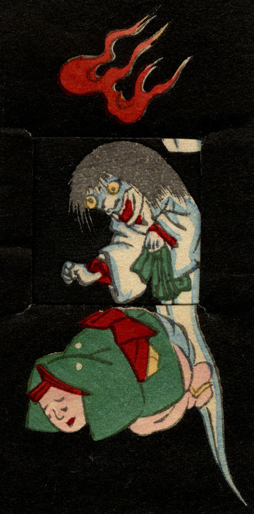

幽霊がうずくまる男に迫っている。幽霊は白装束姿で髪を振り乱し、両腕を前に突き出している。足はない。頭上に火の玉が浮いている。
出典：親書誌：U426_nichibunken_0239：しん板かはりうつしゑ；シンパンカワリウツシエ／日付：2010／資源識別子：U426_nichibunken_0239_0005_0000
Copyright (c)2010- International Research Center for Japanese Studies, Kyoto, Japan. All rights reserved.